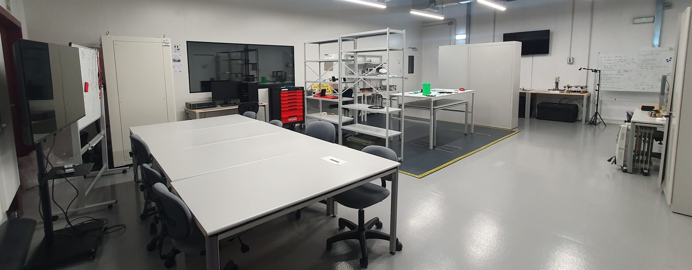

SIL/HIL testing
We have a wide array of electronic equipment for signal generation and analysis to support Software-In-the-Loop (SIL) and Hardware-In-the-Loop (HIL) testing.
Center for Space Technology & nano/micro SATellites
CSAT is a state-of-the-art research and testing facility at Universidad Carlos III de Madrid, specializing in the development and validation of nano and microsatellite technologies. It provides researchers, universities, and industry partners with access to advanced Assembly, Integration, Verification and Testing (AIVT) infrastructure — bridging the gap between small educational satellites and full-scale commercial missions.

We have a wide array of electronic equipment for signal generation and analysis to support Software-In-the-Loop (SIL) and Hardware-In-the-Loop (HIL) testing.
We can use an inhouse-developed system with 12-magnetometers sensors to characterize the dipole of systems up to 27U and take measurements and perform calibrations with a high-fidelity magnetometer.
We can test ADCS systems in 3-DOF, zero-gravity-like, rotational motion using one of our two spherical Air Bearing Tables (ABT), one for devices under test (DUT) up to 40 kg and the other from 40-200 kg.
Using our 2.5 meters’ 3-axis Helmholtz Cage (HHC) we can recreate Earth’s magnetic field at a given orbital path or a constant position. This can be used for magnetometer calibration and/or magnetorquer testing, as well as to perform and validate satellite detumbling, nadir-pointing, and agility-based maneuvers.
The two previous capabilities can be complemented by a LED-based Sun simulator with 130,000 Lux@1m (>1 Sun) to excite the satellite’s solar panels and sensors.
In addition to recreating the motion, the magnetic-field, and the Sun for LEO orbits, an all-bands / all-frequencies GNSS simulator (capable of generating more than 700 simultaneous signals from all constellations) can also be added (or used independently) to verify the satellite’s onboard navigation solutions.